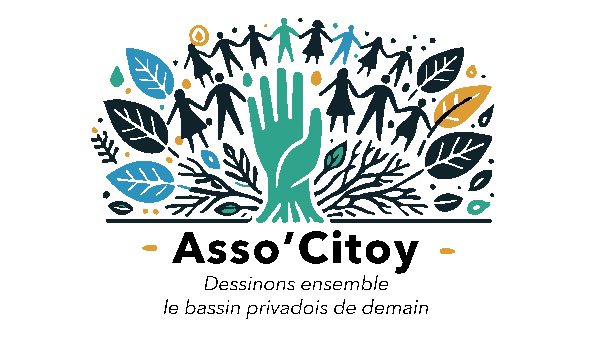

Réseau social très utilisé dans notre bassin, nous y avons notre page, alimentée régulièrement. C'est notre communication la plus « temps réel »
Nous suivre

A travers nous, les habitants se font citoyens
L'Association Citoyenne du bassin privadois a été créée fin 2024 par des habitants de diverses communes du bassin privadois.
Son objectif : faire des habitants non pas les spectateurs de la vie publique, cantonnés à donner leur bulletin tous les 6 ans, mais de vrai.e.s citoyen.ne.s, légitimes pour penser et orienter les politiques publiques de leur territoire.
Nous voulons être un porte-voix pour les habitants, mais aussi un outil pour faire nous-mêmes, pour nous émanciper.
Les nouvelles de l'association
Ce site ne contient pas d'informations acutalisées régulièrement. Voici les canaux par lesquels vous pourrez obtenir des informations régulières :
Évènements
Nous publions aussi le calendrier de nos évènements, grâce à notre environnement de travail Framaspace
Nous rencontrerInfolettre Bientôt
Nous avons pour projet de proposer une infolettre publique pour vous permettre de recevoir nos actualités dans votre boîte mail.
S'inscrireLes commissions
Notre association laisse libre court aux envies de ses membres. Celleux-ci constituent des groupes de travail, de reflexion, de support, etc. que nous appelons commissions. Voici quelques exemples :
Citoyenneté
- Faire vivre la démocratie dans et hors de l'association
- Penser des modes de décision collectifs
Finances Publiques
- Comprendre le budget d'une commune
- Aider à chiffrer des projets
Environnement
- (Re)Penser l'urbanisme
- Animer des trocs de plante
Lien Social
- Comment vraiment vivre ensemble
- Comprendre les enjeux de sécurité
Gouvernance de l'association
Afin de faire vivre notre volonté de démocratie, nous avons imaginé un fonctionnement différent des organisations habituelles. Nous n'avons pas d'organisme de décision central (bureau / conseil d'administration).
Ce sont les commissions qui initient des projets, et les mènent à bien. Les membres de l'association peuvent donner leur opinion sur tous les projets menés par les commissions.
Notre Conseil d'Association a pour rôle de faire le lien entre les commissions et membres, tout en s'assurant du juste usage des ressources communes de l'association.
Si vous avez des questions, n'hésitez pas à nous les poser à ca@associtoy.fr
Boîte à bonnes idées
Après un travail d'écoute des habitants lors de nos divers évènements, nos membres ont inventorié plus de 160 propositions !
Notre association met à disposition sa boîte à bonnes idées à tous les habitants du bassin privadois, afin que chaque personne puisse s'en emparer et nous aider à les faire advenir.
Lors de notre AG de septembre 2025, 67 de ces propositions ont été mises en avant avec un soutien quasi unanime, et 22 en particulier ont été désignées prioritaires.